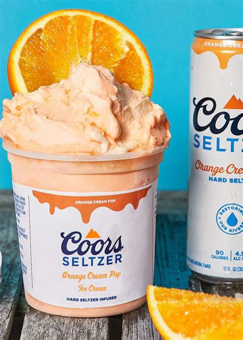

Blog
-

*NEW CHILLS FOR SUMMER*
By Admin on November 28, 2023Coors Seltzer releases new alcohol-infused ice cream just in time for summer! According to a press release, Coors’ limited-time flavor, Orange Cream Pop, has been churned into a limited-edition ice cream flavor in partnership with Tipsy Scoop.. It’s described as a “refreshing, nostalgic blend of orange and vanilla with a touch of sweetness to taste like orange cream soda.” The ice cream contains up to 5 percent alcohol by volume.
Can we say "HoT GiRl SumMeR!!!" -
Bootleg Creamery
By Admin on November 28, 2023Colorado based Bootleg Creamery has released a Fall inspiring new alcohol-infused ice cream- Irish Coffee: (dark roast coffee-flavored ice cream infused with whiskey and Irish cream, with cookies) This sounds like the perfect treat to have after dinner, on a crisp Fall evening while snuggled up under the blanket and watching your favorite show.
Brand of the Week

Tipsy Scoop
By Admin on November 28, 2023Following in the family ice cream tradition,
I began to experiment with putting a modern boozy twist on ice cream.
I wanted to combine the best of both worlds and infuse traditional ice cream flavors with different liquors.
I finally perfected the recipes and came up with creamy, tipsy and delicious treats!
And now, in the family tradition, Tipsy Scoop™!
-Bella